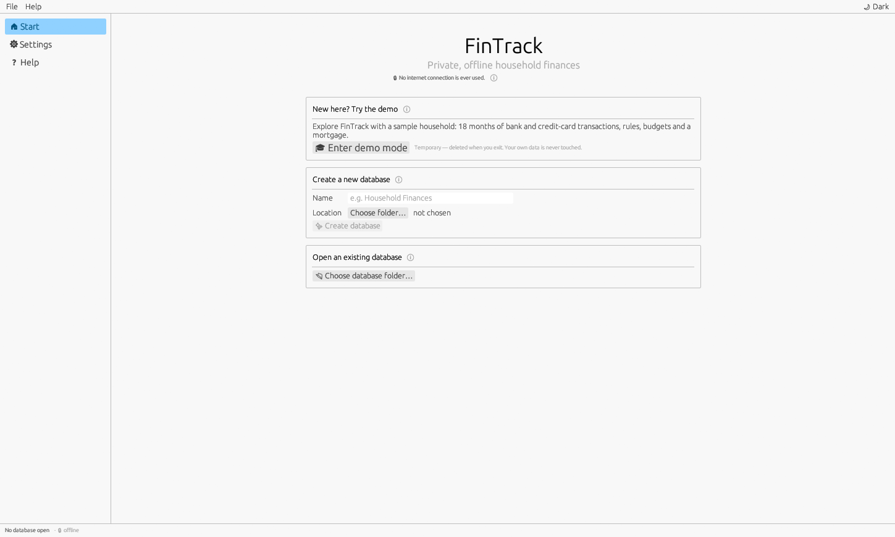
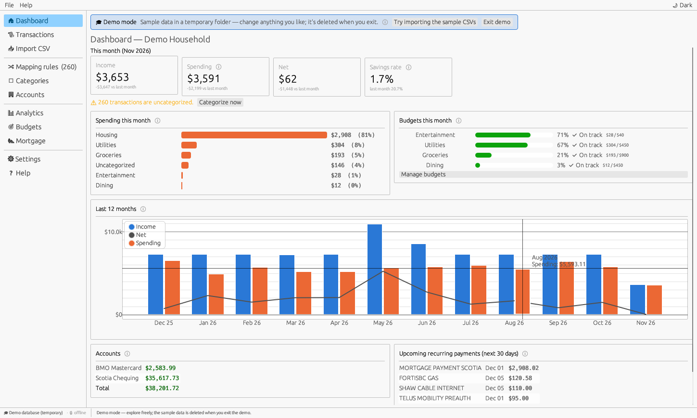
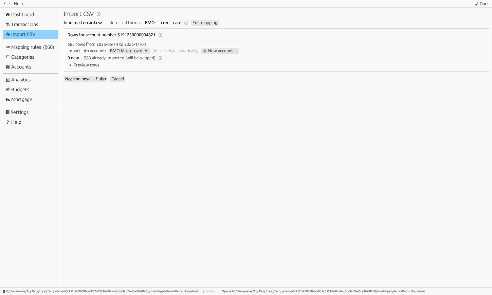
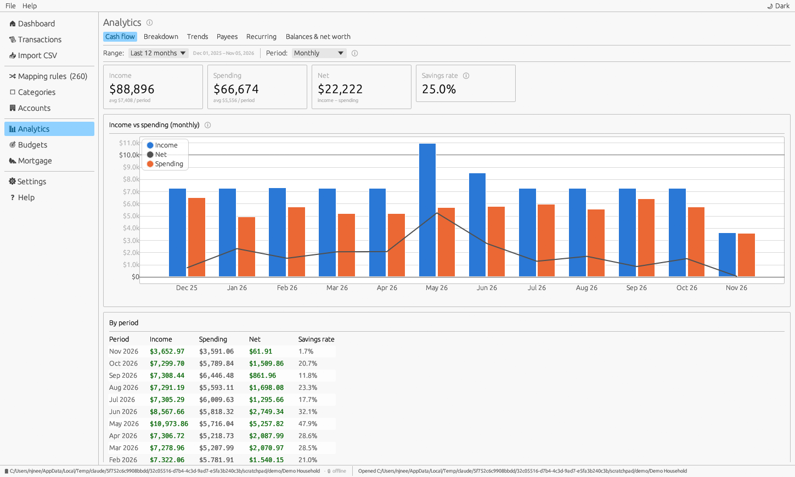
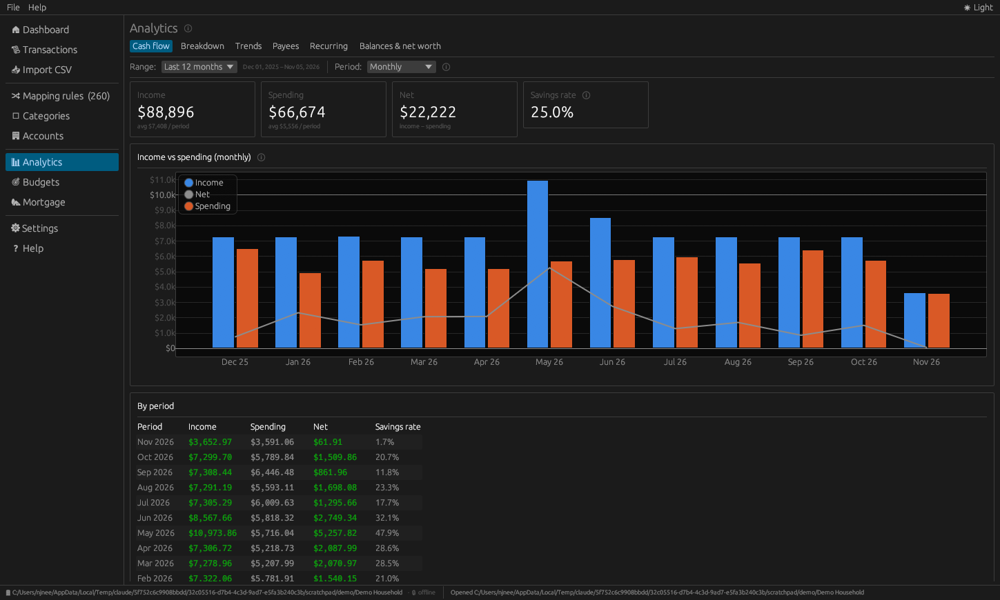
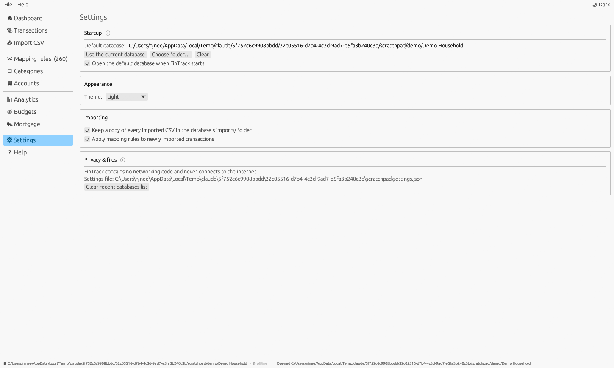

FinTrack
User Manual — private, offline household finances

FinTrack helps you understand your household finances using the CSV files your bank already lets you download. You import those files, FinTrack works out which account they belong to and skips anything you've already imported, and your rules sort every transaction into categories such as Groceries / Save on Foods or Income / Mayfair. From there you get dashboards, charts, budgets and a mortgage payoff planner.
A FinTrack database is a folder on your computer containing a file named fintrack.sqlite (all your data) and a folder named imports (a copy of every CSV you imported). You can have as many databases as you like — for example one for the household and one for a small business.
Use File ▸ Open database… (or the start screen) and choose the database folder — the one that contains fintrack.sqlite. Recently opened databases are listed on the start screen and under File ▸ Open recent.
The first database you open becomes the default. FinTrack opens the default database automatically when it starts. To change it, open Settings ▸ Startup, then click Use the current database or Choose folder…. Untick Open the default database when FinTrack starts if you prefer to choose each time.
When no database is open, the start screen offers Enter demo mode (also available any time as File ▸ Try the demo). FinTrack builds a sample household — 18 months of chequing and credit-card transactions, mapping rules, budgets and a mortgage with prepayments — and opens it.



| Area | What it does |
|---|---|
| Menu bar | File: new/open/close database, import, backup, show folder, quit. Help: user guide and About. On the right, a button switches between light and dark mode. |
| Navigation | Pages, grouped as: Dashboard, Transactions, Import CSV · Mapping rules, Categories, Accounts · Analytics, Budgets, Mortgage · Settings, Help. Mapping rules shows the number of uncategorized transactions in brackets. |
| Status bar | The open database folder, the "offline" reminder, and messages such as "Imported 42 transactions". Error messages stay until you close them with ✖. |
An account represents one bank account or card: your chequing account, a savings account, a credit card. Every transaction belongs to exactly one account. You can create accounts on the Accounts page, or right inside the import screen the first time you import a file for that account.

| Field | Purpose |
|---|---|
| Name, Bank, Type | How the account is shown everywhere in FinTrack. |
| Account number | The full number or at least the last 4 digits. If a CSV contains an account or card number column, FinTrack uses it to pick the account automatically. Masked numbers such as 5191********1234 are matched by their last four digits. |
| Filename hint | Text that appears in the names of this account's export files, e.g. visa for Visa_March.csv. Useful for banks whose files contain no account number. |
| Usual CSV format | Filled in automatically after the first import. If only one account uses a format, files in that format are assigned to it. |
| Opening balance | The balance just before your first imported transaction. Needed for correct balances and net worth. Use a negative number for money owed on a credit card. |
| Archived | Hides an old account from pickers and automatic detection while keeping its history. |
Download a CSV (sometimes called "spreadsheet" or "Excel/CSV") export of your transactions from your bank's website. Then, in FinTrack:

You don't need to keep track of which dates you've already imported. Export a generous date range each time; FinTrack compares each row with what's already in that account (same date, same amount and same description) and skips the ones it already has. If the same file contains two identical rows — two coffees on the same day for the same amount — both are kept, because they really are two purchases.
Some banks put several cards in one file with a card-number column. FinTrack shows one section per account number, each with its own account choice.
The Import page lists every import with its date, file, format and the number of rows added and skipped. Undo removes every transaction that import added (manual categories and notes on those transactions are lost). A copy of each imported file is kept in the database's imports folder unless you turn this off in Settings.
The first time you import a file from a bank FinTrack doesn't know (or after your bank changes its export layout), FinTrack shows the column mapper. It makes a best guess, so often you only need to check the preview and click Save format & continue.

| Setting | What to choose |
|---|---|
| Header row | The row containing column names. Lines above it (e.g. "Account statement…") are ignored. Choose No header row if the file starts directly with transactions. |
| Date column & format | The column with the transaction date. Automatic works for most files; pick a format explicitly if day and month could be confused (e.g. 03/04/2026). |
| Description column | The main text describing the transaction (payee or merchant). |
| Memo / details columns | Optional extra text columns. They are searchable and rules can match them. |
| Amount | Single signed column if one column holds amounts with − for money out. Separate debit / credit columns if the bank uses two columns. Tick Flip sign if money out appears as positive numbers (common for credit cards). |
| Direction column | For files with a column like "Debit/Credit": choose the column and the word that means money out. |
| Account number column | Optional; enables automatic account detection. |
| Balance column | Optional; stored for reference. |
| Skip rows | Ignore rows whose chosen column contains some text, e.g. Pending. |
Give the format a name and click Save format & continue. From now on, files with the same layout are recognised automatically. To change a format later, import a matching file and click Edit mapping on the review screen; Save as new format keeps the old one.
Categories have two levels: a top-level category (Groceries, Housing, Income) and optional subcategories (Groceries / Save on Foods, Income / Mayfair). A transaction can be assigned to either level. New databases come with a sensible starter set that you can change freely.

Every top-level category has a kind, which its subcategories share:
A mapping rule tells FinTrack how to categorize transactions automatically, for example: when the description contains "SAVE ON FOODS", assign Groceries / Save on Foods. Rules apply to everything already imported and to every future import.

This tab lists uncategorized transactions grouped by payee (the first words of the description, ignoring store numbers and reference codes). For each group:
Hover a payee to see example descriptions. Open as a list in Transactions shows the same transactions one by one.
| Field | Meaning |
|---|---|
| When | Which text to look at (description, memo or either) and how: contains, starts with, equals (all ignore upper/lower case and extra spaces) or matches regex for advanced patterns. |
| Direction | Limit to money out or money in — e.g. only incoming "PAYROLL" is salary. |
| Amount between | Optional minimum and/or maximum amount, e.g. Costco over $300 is Household, smaller trips are Groceries. |
| Only in account | Restrict to one account. |
| Assign category | The category to assign. You can also create a new category right there. |
| Priority | Rules are checked from the lowest number up; the first rule that matches wins. Give specific rules a lower number than general ones. |
The bottom of the editor previews every matching transaction, how many are currently unmapped, and how many have manual overrides (those are never changed).
Lists all rules with their priority, condition, category and how many transactions each currently categorizes. Untick a rule to disable it, use ✏ to edit, 🗑 to delete. Test a description lets you type a description and amount to see which rule would apply. Re-apply all rules re-runs every rule (it happens automatically whenever rules change).
The Transactions page shows every transaction, newest first, with totals for what's shown.
Filter by date range, account, category (Any, Uncategorized or a specific category with or without its subcategories), search text (description, memo and note), and Manual overrides only. Reset clears all filters.
Click the category on any row and choose a different one. This is a manual override: it is marked with ✋ and rules will never change it. To go back to the automatic category, choose the Automatic (…) entry at the top of the list. The ℹ next to a category shows which rule assigned it.
Tick the checkboxes on the left (or the header checkbox to select everything shown). A bar appears with Set category, Clear overrides and Delete.
Analytics answers "where does the money come from, and where does it go?". The controls at the top apply to every tab:
| Control | Options |
|---|---|
| Range | This month, last month, last 3 / 6 / 12 months, year to date, last calendar year, all time, or a custom range. |
| Period | Weekly (weeks start Monday), Monthly, Quarterly, Annual. |
| Show | Spending or Income. |
| Group by | Top-level category (Groceries), Subcategory (Groceries / Save on Foods), Account, or Payee. |
| Series | How many groups are drawn in the stacked chart; the rest are combined as "Other". |



Track how your mortgage is progressing and see how prepayments change the payoff date and total interest. FinTrack uses Canadian semi-annual compounding, as required for fixed-rate mortgages in Canada.

Monthly, semi-monthly, bi-weekly and weekly spread the same yearly cost over more payments. Accelerated bi-weekly/weekly pay half/a quarter of the monthly payment every two weeks/every week — equivalent to one extra monthly payment a year — and pay the mortgage off years sooner.
When you renew (or your variable rate changes), add the new rate and the date it takes effect. The payment is recalculated from that date for the remaining amortization, keeping the time you've already saved with prepayments.
Progress today shows the balance, principal repaid, interest paid and payments made according to the schedule. The balance chart compares baseline and plan (dashed line = today). The schedule can be shown per year or per payment (past payments are dimmed).

File ▸ Back up database… writes a complete, consistent copy of the database to a single .sqlite file. To restore, create an empty folder, put the backup in it renamed to fintrack.sqlite, and open that folder. You can also back up by copying the whole database folder while FinTrack is closed.

Import it, then use Edit mapping on the review screen (or map it when asked). Check the preview: money you spent should be negative. Tick Flip sign if not.
This happens when the bank changes a transaction's description between exports — usually a pending transaction that later posts with a different text. Use Skip rows in the format mapping to ignore pending rows, and delete the extra copy on the Transactions page.
Go to Import CSV ▸ Import history, click Undo for that import, and import the file again choosing the right account.
Use Mapping rules ▸ Rules ▸ Test a description. Possible causes: another rule with a lower priority number matches first; the rule is limited by direction, amount or account; the transaction has a manual override (✋), which rules never change.
Categorize both sides of the payment (the payment out of chequing and the payment received on the card) with a Transfer category such as Transfers / Credit Card Payment.
Set each account's opening balance (Accounts ▸ ✏ Edit) to its balance just before the first imported transaction.
No. FinTrack contains no internet code. Your data is only in your database folder and a small settings file. The database isn't encrypted, so keep it on an encrypted drive if others use your computer.
| Format | Recognised by | Notes |
|---|---|---|
| Scotiabank — bank account (classic) | 5 columns, no header: date, amount, -, description, sub-description | Signed amounts |
| Scotiabank — credit card (classic) | 3 columns, no header: date, description, amount | Signed amounts |
| Scotiabank — online banking export | Header: Filter, Date, Description, Sub-description, Status, Type of Transaction, Amount | Direction from "Type of Transaction"; pending rows skipped |
| BMO — bank account | Header: First Bank Card, Transaction Type, Date Posted, Transaction Amount, Description | Account number from card column |
| BMO — credit card | Header: Item #, Card #, Transaction Date, Posting Date, Transaction Amount, Description | Purchases flipped to negative; card number used for detection |
Banks occasionally change their export layouts. Every built-in format can be edited, and new ones can be saved.
| What | Where |
|---|---|
| Your data | <database folder>\fintrack.sqlite |
| Imported CSV copies | <database folder>\imports\ |
| Settings | %APPDATA%\FinTrack\config\settings.json (shown on the Settings page) |
| Command | Effect |
|---|---|
fintrack --demo | Starts straight into demo mode. |
fintrack --page budgets | Opens directly on a page (dashboard, transactions, import, categorize, categories, accounts, analytics, budgets, mortgage, settings, help). |
fintrack statement.csv | Opens the default database with the file queued for import — so you can use Open with ▸ FinTrack on CSV files. |
| Mapping rule | An automatic "if the text matches, assign this category" instruction. |
| Override | A category you chose by hand for one transaction; rules never change it. |
| Unmapped | A transaction without a category. |
| Transfer | Money moving between your own accounts; excluded from income and spending. |
| Amortization | The total time to pay the mortgage off at the regular payment. |
| Prepayment | An extra lump-sum payment that goes straight to principal. |